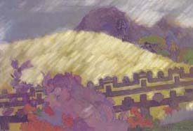

|
Gauguin:
Cezanne would say that here in Aix the forms
are the same as those I witnessed south of the equator.
But the light is wrong, though brilliant in its way,
and it is Vincent who captures this, while careful old Paul
plays with his apples and pears. But Gachet shrugs his head,
mutters that no, we two see many things the same,
the way our paint flattens an object into planes,
makes a puzzle of daily pattern. Yet I am restless here,
the women all too interested in my empty purse,
not pliant like the sables of my southern brush.
|
 |